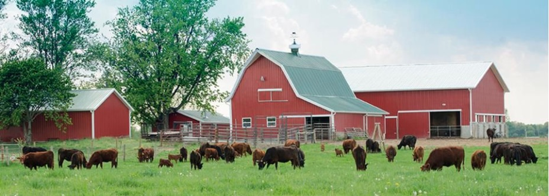

ABOUT US
The Best Value for Organic Meats!
Zoo Box builds a new online system that strives to value farmers and customers equally
In the U.S., six vertically-integrated brands control nearly all of the feeding, processing and distribution of livestock. To minimize costs, the farmers who work for these corporations frequently feed their animals corn and soy products, supplemented with growth hormones and antibiotics.
“This is a very broken model,” said Catherine Compitello, the CEO of online startup Zoo Box. “It’s worthless to farmers, and it’s worthless to consumers.”
Consumers have become skeptical of this corporate system and movements for grass-fed, pasture-raised meat sourced from local producers are growing across the nation. In response to increasing demand, Zoo Box has built a new system that strives to value farmers and customers equally.
Zoo Box buys pasture-raised, antibiotic and hormone-free cattle, pigs and poultry from a network of regional farms, then processes and sells the meat to wholesalers and individual consumers in the mainland US. Consumers can buy their meat through an e-commerce platform and get free delivery to their doorstep.
Zoo Box is one of several recent agriculture and food-related startups founded by Chris Baggott, an online startup entrepreneur. Zoo Box has proven its concept since opening in 2018, demonstrated by its partnerships with local farmers and meat processors and $1.2 million in revenue last year.
Augmenting Agriculture with Tech
Zoo Box started out as a one-farm operation run by Baggott in Greenfield, IN. When the company couldn’t meet demand with its single location, it began supplementing its own livestock with animals from a handful of other farms. Under the current arrangement, farmers take care of raising their own animals, and Zoo Box handles harvesting, storage and distribution with the help of a few business partners. Baggott and Compitello often meet with farmers in person to ensure they’re following all guidelines for raising livestock. But this kind of interaction doesn’t scale well, which is why the team is developing proprietary technology to maintain our high standards as we expand geographically. When complete, the technology will allow farmers to use their mobile devices to capture and send vital data about their animals, the food they eat and their pasture rotation. Zoo Box will be able to analyze the data to ensure compliance with our regulations and keep the entire network running smoothly. “In building this technology at scale, we’ll have brand integrity,” Compitello said. “We’ll have accountability with our farmers, consumers will have transparency, and Zoo Box can easily manage our system and guarantee our farmer contracts.”
The Struggle to Make Organic Economically Expedient
Zoo Box’s tech platform is great for managing our growing network, but getting farmers to sign up could be a persistent challenge. Only 3% of grass-fed beef consumed in the U.S. is produced in the U.S., partly because it’s much cheaper to feed cattle corn and soy. Zoo Box attracts farmers with promises of higher prices and a reliable market. The average commodity crop farmer earns $500 per acre; by comparison, Zoo Box offers its producers $3,000 per acre. So far, these incentives have been relatively successful in attracting farm partners. But Compitello reported the company’s biggest obstacle is still finding more farmers to fill out its network. Supply continues to outpace demand, which proves their products are valuable to consumers. The company just has to ensure it remains valuable to farmers even as market conditions and government incentives might change.
Sowing a Revolution in Sustainable Meat Farming
Zoo Box’s small but lucrative customer base is the most promising sign of growth. It has 1,100 active customers who order 1-3 times per year and 500 loyal customers who order 1-3 times per month. A lot of revenue is coming from a very small group of people. Considering the $43 billion domestic market for organic food that grows by double digits every year, there’s incredible potential for Zoo Box to scale nationally. It already has a competitive edge over other meat delivery services like ButcherBox and Greensbury thanks to its focus on creating local, sustainable farming networks that benefit producers as well as consumers. “We believe we’ve built a system that works very well,” Compitello said. “It gives farmers a stable market to sell into and customers a high-quality product that is always delivered directly to their doorstep.”
(Credit: Forbes)
Hours of Operation: 6am-9pm Eastern Time
Follow us: